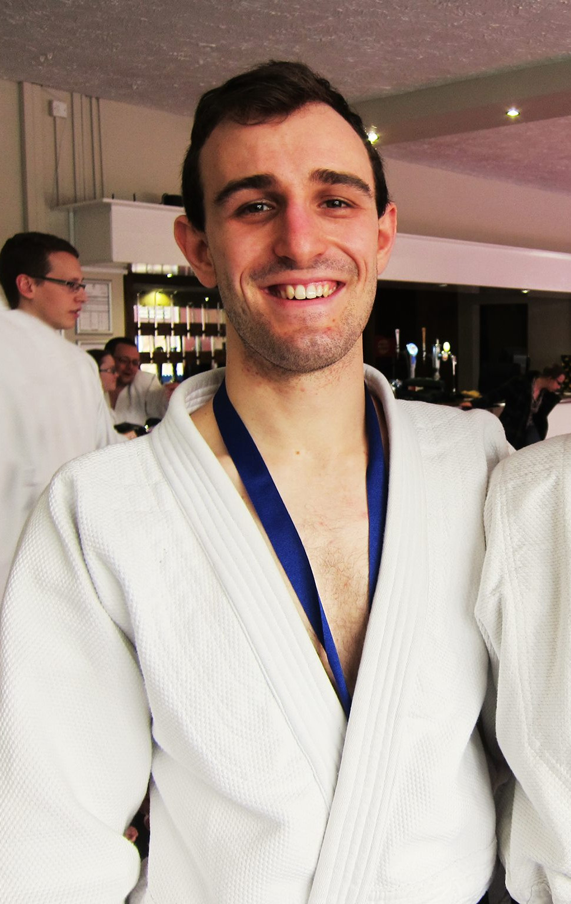
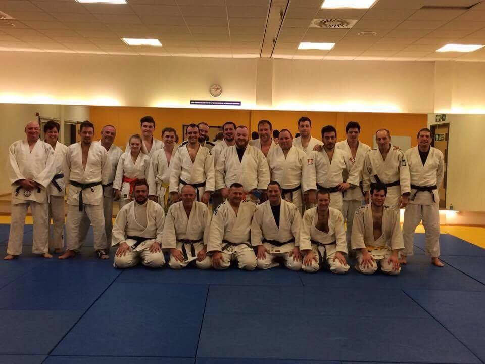
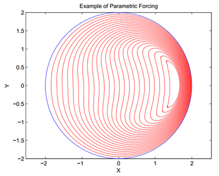
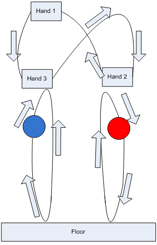

Judo
I have been doing Judo since I was 10, and am currently a shodan (first level black belt) with the IBC (International Budo Council) and BJA (British Judo Association). I have completed a BJA (British Judo Association) level 1 coaching course. I used to help run and teach at the Brighton and Sussex University clubs.
Below there is a picture of me, and a picture of a group of us after a training session.


Maths Projects
In my four years studying mathematics as an undergraduate I completed two main projects (among multiple small projects). In my first year I investigated the mathematics behind juggling, focussing on discrete models for tricks, as opposed to the physics governing the movement of the juggling balls. In my final (masters) year, I investigated a number of finite element approximations to the Allen-Cahn equation. The Allen-Cahn equation models the shrinking of a surface at a velocity proportional to the curvature of the surface.
Masters project
The purpose of this project is to model the evolution of closed curves in the real plane. It is intended that the velocity of the curves should be proportional to the curvature of the curve, and also that a forcing term could be added to the equation. You can read the project
here.

Juggling project
This project investigates the mathematics which underlies and describes the practise of juggling. I am going to look first at discrete models, and then at more general continuous models that can describe and manipulate patterns. Lastly I am going to suggest and briefly explore a new method for classifying patterns. You can read the project
here.
